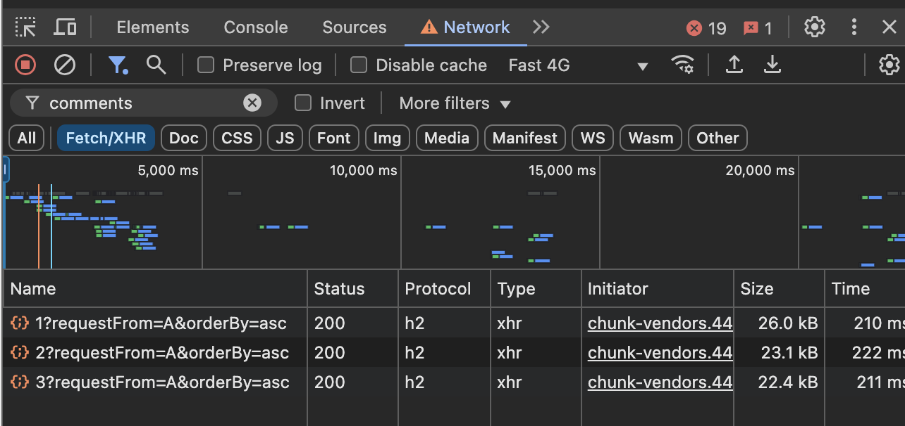
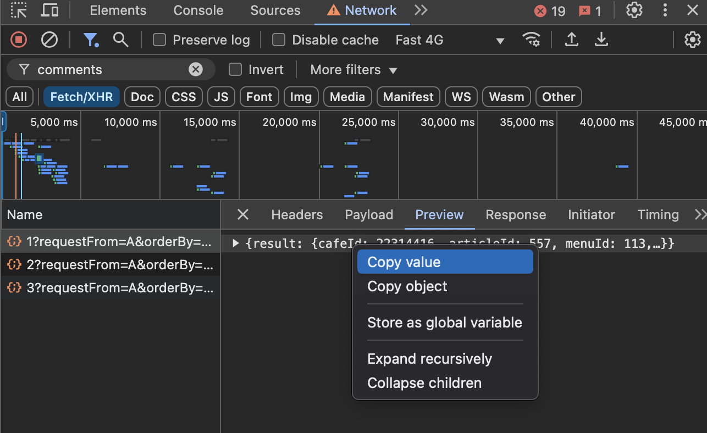

댓글 JSON 파일 저장 가이드
1. 크롬 > 개발자도구(F12) NETWORK 탭 열기
댓글을 추출하고자 하는 페이지에서 열어줍니다.
2. 검색창에 comments를 치고, Fetch/XHR 탭 누른 후 새로고침
3. 개발자도구를 유지한 상태에서 추출하고자 하는 댓글 페이지 모두
클릭

4. Preview 탭에서 오른쪽 마우스 Copy Value 하여 데이터 복사

5. 메모장에 붙여넣고 원하는이름.json 으로 저장
처음 부분이 { "result":{ 로 시작해야합니다.
6. 댓글 페이지 별 반복하여 json 파일 저장